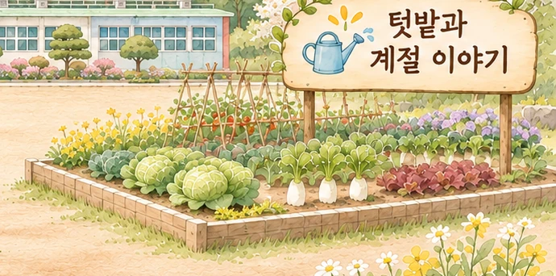

텃밭 활동
친환경 텃밭 가꾸기
학교 텃밭 수확물로 요리하기
숲의 이야기를 그리다
흙을 만지고, 계절을 느끼고, 함께 나누는 배움
봄에는 씨앗을 심고 여름에는 자라는 모습을 살펴봅니다. 가을에는 수확의 기쁨을 나누고 계절에 맞는 음식을 만들어보기도 합니다. 양덕분교에서 자연과 계절을 가까이하며 경험한 활동들을 모았습니다.
← 산책지도로 돌아가기
이런 활동을 만날 수 있어요
※ 이곳은 학부모가 자율적으로 만든 비공식 소개 공간입니다. 실제 활동 내용과 일정은 학년도 및 운영 상황에 따라 달라질 수 있습니다.